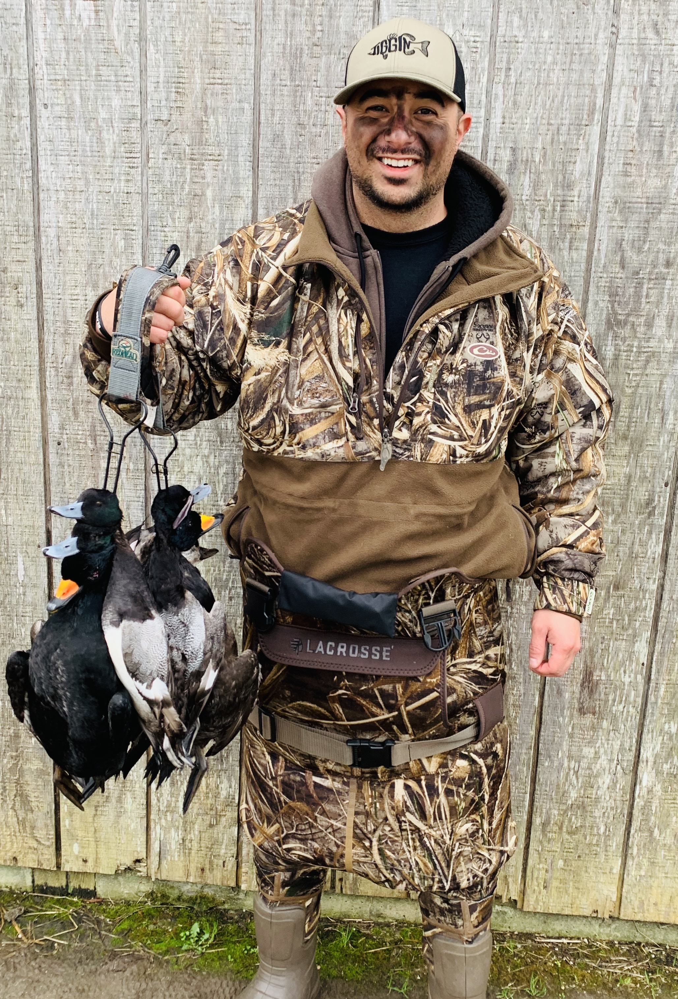
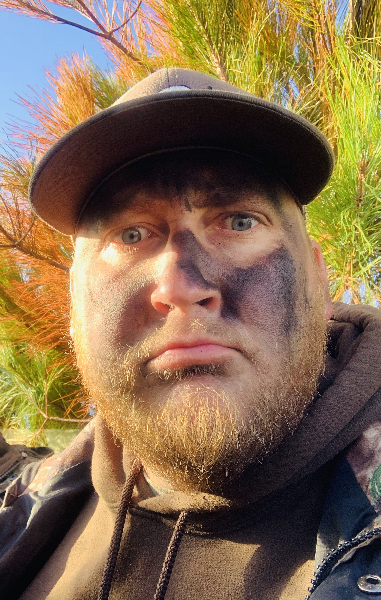
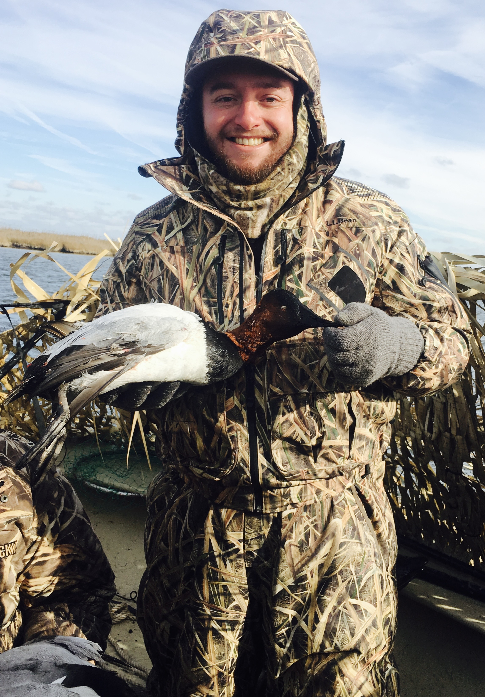

Meet The Club
Big Duck Outfitters was founded by three lifelong friends who share a passion for hunting and the outdoors. For more than 20 years, we have hunted together.
We are all from Raleigh, North Carolina and graduated from the same high school. Over the years, we have hunted deer, doves, turkeys, coyotes, and ducks, but
waterfowl hunting has become our true passion. The challenge, strategy, and excitement of duck hunting keep us coming back season after season. Whether we're
hunting flooded swamps, secluded ponds, large lakes, or open water, every hunt offers a new adventure.Most of our hunts take place in the Pamlico Sound region
along the coast of North Carolina near Lake Mattamuskeet, one of the premier waterfowl destinations on the East Coast. At Big Duck Outfitters, we enjoy sharing
our adventures while promoting responsible hunting, conservation, and the traditions that have brought us together for decades.
Welcome to Big Duck Outfitters—we're glad you're here!

Top
Dream duck?
Cinnamon Teal
Go‑to duck camp meal?
Chili
Beverage of choice?
Bourbon or Seltzer
Favorite brand of duck hunting gear?
Drake

Tyler
Dream duck?
Pintail
Go‑to duck camp meal?
Hot Dogs
Beverage of choice?
Natural Light
Favorite brand of duck hunting gear?
SITKA

Kyle
Dream duck?
Pintail
Go‑to duck camp meal?
CrockPot Tortellini
Beverage of choice?
Natural Light
Favorite brand of duck hunting gear?
SITKA